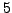

There are three possibilities to specify a criterion for program termination:
Multiple specifications in terms of these keywords cause the prewhitening cascade to terminate if one of the limits is reached.
The default assignment for siglimit is . This pre-definition may be deactivated by defining
siglimit 0
in the .ini file. The limits iterations and csiglimit are switched off by default.
Example. The sample project terminate contains a combination of the keywords siglimit, csiglimit and iterations, applied to the V photometry of IC4996#89 as input file. For a comparison to the standard output, please refer to Example SigSpecNative, p. . The file terminate.ini contains a combination of three keywords:
. The file terminate.ini contains a combination of three keywords:
siglimit 0
csiglimit 3
iterations 10
The first line deactivates the default setting of 5 for the sig limit. The combination of the second and third line forces SIGSPEC to terminate after 10 iterations, or earlier, if the cumulative sig drops below 3. The screen output provides seven lines, corresponding to six significant signal components:
1 freq 3.13205 sig 9.54539 rms 0.00449592 csig 9.54539
2 freq 3.98471 sig 7.43085 rms 0.00422861 csig 7.42753
3 freq 5.40684 sig 5.30164 rms 0.0040257 csig 5.2984
4 freq 17.3677 sig 4.13698 rms 0.00388775 csig 4.10802
5 freq 3.67101 sig 3.73187 rms 0.00378701 csig 3.57943
6 freq 52.5182 sig 3.41319 rms 0.00369756 csig 3.18744
7 freq 41.7372 sig 3.02872 rms 0.00361981 csig 2.80001
The cumulative sig of 2.8 for component 7 is responsible for program termination before the limit of 10 iterations is reached.


Next: Default Output
Up: Input
Previous: Accuracy of MultiSine fits
Contents
Piet Reegen
2009-09-23